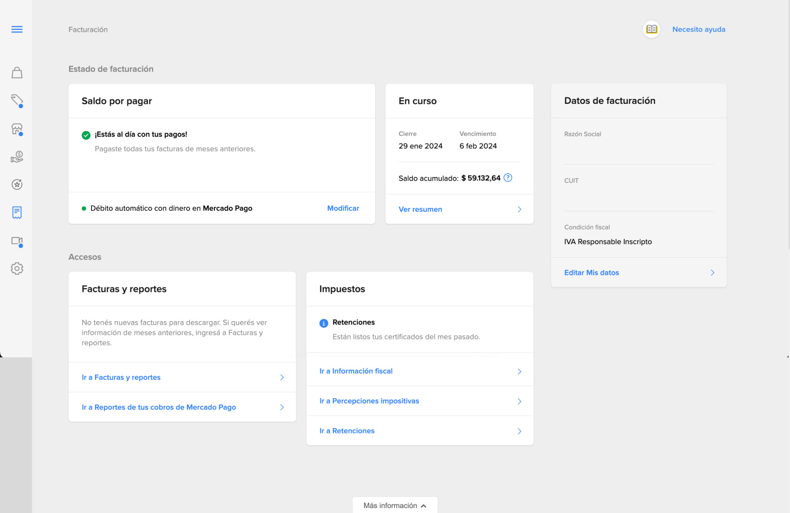

01El desafíoThe challenge
Una experiencia de facturación difícil de comprender y mantener
A billing experience that was hard to understand and maintain
El Summary de Facturación había evolucionado de forma diferente entre sites, aumentando los esfuerzos de mantenimiento y desarrollo.
The Billing Summary had evolved differently across sites, increasing maintenance and development effort.
Al mismo tiempo, los vendedores recurrían a atención para comprender sus cobros y completar tareas habituales.
At the same time, sellers turned to support to understand their charges and complete everyday tasks.
El desafío era facilitar la comprensión y gestión de la facturación, construyendo una experiencia consistente y escalable entre mercados.
The challenge was to make billing easier to understand and manage, building a consistent, scalable experience across markets.
20,5%20.5%
Descarga de documentosDocument downloads
Distribución de contactos de FacturaciónDistribution of Billing contacts
7,4%7.4%
Débito forzadoForced debit
Distribución de contactos de FacturaciónDistribution of Billing contacts
Registros de CX, diciembre de 2023. Estas categorías aportaban señales de fricción, pero no medían por sí solas los problemas específicos del Summary.
CX records, December 2023. These categories provided friction signals but did not by themselves measure the Summary's specific problems.
02El problema que encontramosThe problem we found
El saldo total no contaba toda la historia
The total balance didn't tell the whole story
El Summary mostraba una deuda que podía acumular varios meses, pero «Ver resumen» llevaba inicialmente al detalle de un único período.
The Summary showed a debt that could accumulate several months, but "Ver resumen" initially led to the detail of a single period.
Aunque los demás meses estaban disponibles, el vendedor debía buscarlos y relacionar sus importes para reconstruir el total.
Although the other months were available, the seller had to look for them and relate their amounts to rebuild the total.
La información existía, pero el recorrido no conectaba directamente la deuda acumulada con los períodos que la componían.
The information existed, but the journey didn't directly connect the accumulated debt with the periods that made it up.
Saldo acumulado de varios mesesAccumulated balance of several months
Información inicial de un solo mesInitial information for a single month
Buscar otros períodos y reconstruir la deudaSearch other periods and rebuild the debt

El saldo acumulado podía incluir varios meses, pero «Ver resumen» dirigía inicialmente a un único período. Para reconstruir la deuda, el vendedor debía consultar manualmente los meses anteriores.
The accumulated balance could include several months, but "Ver resumen" initially took the seller to a single period. To reconstruct the debt, the seller had to manually check previous months.
03Cómo definimos las prioridadesHow we defined priorities
Entender antes de pagar
Understand before paying
Combinamos JTBD, benchmarking y evaluación heurística con las señales de CX para analizar las necesidades de los vendedores.
We combined JTBD, benchmarking and heuristic evaluation with CX signals to analyze sellers' needs.
La relevancia del cobro para el negocio, la incertidumbre de los vendedores frente a la deuda y el volumen de contactos a atención nos llevaron a priorizar entender y pagar la deuda.
The relevance of the charge to the business, users' uncertainty about their debt and the volume of support contacts led us to prioritize understanding and paying the debt.
Organizamos las necesidades en cuatro niveles para orientar la jerarquía del producto.
We organized the needs into four levels to guide the product hierarchy.
04Las decisiones de diseñoThe design decisions
Del saldo aislado a una experiencia contextual
From an isolated balance to a contextual experience
Junto con los equipos involucrados, revisamos la jerarquía de información y los estados de facturación existentes, que presentaban redundancias y ambigüedades.
Together with the teams involved, we reviewed the information hierarchy and the existing billing states, which had redundancies and ambiguities.
Reorganizamos el Summary alrededor de dos niveles:
We reorganized the Summary around two levels:
Estado general: comunicar la situación de pago y destacar las acciones relevantes.
General status: communicate the payment situation and highlight the relevant actions.
Estado por período: permitir identificar meses, importes, vencimientos y documentos asociados.
Status by period: let sellers identify months, amounts, due dates and associated documents.
La estructura común podía adaptarse a diferentes situaciones de facturación y necesidades de cada site.
The common structure could adapt to different billing situations and each site's needs.
Mostrar los meses y sus importes desde el Summary.
Show the months and their amounts from the Summary.
Consultar información y documentos asociados a cada período.
Check information and documents associated with each period.
Priorizar mensajes y acciones según la situación del vendedor.
Prioritize messages and actions according to the seller's situation.
05Una estructura, diferentes situacionesOne structure, different situations
Consulta de períodos y documentos.
Review of periods and documents.
Importe, vencimiento y pago.
Amount, due date and payment.
Deuda, consecuencias y resolución.
Debt, consequences and resolution.
06Resultado en BrasilResult in Brazil
−21%
Contactos por «No entiendo mi deuda»
Contacts for "I don't understand my debt"
Reducción del número absoluto de contactos reportada por CX, comparando los dos meses anteriores y posteriores a la implementación.
Reduction in the absolute number of contacts reported by CX, comparing the two months before and after implementation.
Una señal favorable de impacto
A favorable sign of impact
Tras el lanzamiento en Brasil, CX reportó una reducción del 21% en los contactos categorizados como «No entiendo mi deuda».
After the launch in Brazil, CX reported a 21% reduction in contacts categorized as "I don't understand my debt".
El resultado fue consistente con el objetivo de reducir las consultas sobre cobros, aunque las limitaciones de clasificación y la ausencia de una evaluación causal controlada impedían atribuir toda la reducción exclusivamente al rediseño.
The result was consistent with the goal of reducing questions about charges, although classification limitations and the absence of a controlled causal evaluation made it impossible to attribute the whole reduction exclusively to the redesign.
07AprendizajeLearning
Medir desde el inicio también es diseñar producto
Measuring from the start is also designing product
El proyecto evidenció la importancia de contar con una línea base confiable antes de intervenir una experiencia.
The project showed the importance of having a reliable baseline before intervening in an experience.
Las inconsistencias en la clasificación del incoming dificultaron dimensionar los problemas y estimar el impacto esperado.
Inconsistencies in how incoming contacts were classified made it hard to size the problems and estimate the expected impact.
Aprendimos que la instrumentación del producto y la calidad de los datos de CX deben trabajarse desde el inicio para priorizar mejor, medir los comportamientos y evaluar las decisiones con mayor precisión.
We learned that product instrumentation and the quality of CX data must be worked on from the start to prioritize better, measure behaviors and evaluate decisions more precisely.
01VisualVisual
Diseñar una experiencia. Construir un sistema.Design an experience. Build a system.
El rediseño del Summary requería representar distintos estados de facturación, en web y mobile, sin construir una pantalla independiente para cada situación. Para resolverlo, construí en Figma una arquitectura de componentes sobre Andes y documenté sus reglas.Redesigning the Summary required representing different billing states, on web and mobile, without building a separate screen for each situation. To solve it, I built in Figma a component architecture on top of Andes and documented its rules.
02Evolución visualVisual evolution
Lo que cambió en pantallaWhat changed on screen
La experiencia anterior mostraba un saldo acumulado, pero el detalle inicial correspondía a un único período. La nueva propuesta hizo visibles los meses y sus estados desde el Summary, conectando la situación general del vendedor con la información de cada período.The previous experience showed an accumulated balance, but the initial detail corresponded to a single period. The new proposal made months and their states visible from the Summary, connecting the seller’s overall situation with each period’s information.
03Arquitectura de componentesComponent architecture
Una arquitectura de tres capasA three-layer architecture
Construí los componentes específicos de Facturación utilizando Andes como base. La estructura separó los fundamentos visuales, los componentes de producto y la composición de las pantallas.I built the Billing-specific components using Andes as the foundation. The structure separated the visual foundations, the product components and the composition of the screens.
04EspecificacionesSpecifications
Del componente a una solución documentadaFrom component to documented solution
Además de construir la interfaz y sus componentes, documenté medidas, tokens y espaciados para hacer explícitas las reglas del sistema.Besides building the interface and its components, I documented measurements, tokens and spacing to make the system’s rules explicit.